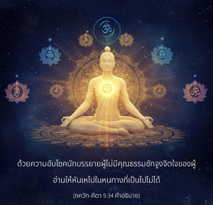

ให้จิตใจของเธอระลึกถึงข้าอยู่เสมอ มาเป็นสาวกของข้า ถวายความเคารพต่อข้าบูชาข้า และซึมซาบอยู่ในข้าอย่างสมบูรณ์ แน่นอนว่าเธอจะมาหาข้า

โศลกนี้แสดงให้เห็นอย่างชัดเจนว่า กฺฤษฺณจิตสำนึกเป็นวิถีทางเดียวเท่านั้น ที่สามารถส่งเราให้ออกจากเงื้อมมือของโลกวัตถุที่มีมลทินนี้ได้ บางครั้งนักบรรยายผู้ไม่มีคุณธรรมบิดเบือนความหมาย ซึ่งกล่าวไว้อย่างชัดเจนตรงนี้ว่า การอุทิศตนเสียสละรับใช้ทั้งหมดควรถวายให้องค์ภควานฺ กฺฤษฺณด้วยความอับโชคนักบรรยายผู้ไม่มีคุณธรรมชักจูงจิตใจของผู้อ่านให้หันเหไปในหนทางที่เป็นไปไม่ได้ นักบรรยายเหล่านี้ไม่รู้ว่าไม่มีข้อแตกต่างระหว่างจิตใจขององค์กฺฤษฺณ และพระวรกายของพระองค์ องค์กฺฤษฺณทรงไม่ใช่มนุษย์ปุถุชนธรรมดา พระองค์ทรงเป็นสัจธรรมสูงสุด พระวรกายของพระองค์ จิตใจของพระองค์ และพระองค์เองเป็นหนึ่งเดียวกัน และสมบูรณ์สูงสุด ได้กล่าวไว้ใน กูรฺม ปุราณ ดังที่ ภกฺติสิทฺธานฺต สรสฺวตี โคสฺวามี ได้อ้างอิงในคำบรรยาย อนุภาษฺย ของหนังสือ ไจตนฺย-จริตามฺฤต (บทที่ห้า อาทิ-ลีลาโศลก 41-48) เทห-เทหิ-วิเภโท ’ยํ เนศฺวเร วิทฺยเต กฺวจิตฺ หมายความว่า ในองค์ภควานฺ กฺฤษฺณนั้นไม่มีข้อแตกต่างระหว่างพระองค์และพระวรกายของพระองค์ เนื่องจากนักบรรยายไม่รู้ศาสตร์แห่งองค์กฺฤษฺณจึงซ่อนองค์กฺฤษฺณ และแบ่งแยกบุคลิกภาพของพระองค์จากจิตใจ หรือจากพระวรกายของพระองค์ แม้ว่านี่เป็นเพียงอวิชชาในศาสตร์แห่งองค์กฺฤษฺณโดยแท้ แต่บางคนยังทำผลกำไรจากการชักนำผู้คนไปในทางที่ผิด
มีบางคนที่เป็นมารก็คิดถึงองค์กฺฤษฺณเช่นเดียวกันนี้ แต่ด้วยความอิจฉาเหมือนกับ กฺษตฺริย กํส พระมาตุลาขององค์กฺฤษฺณ ซึ่งคิดถึงองค์กฺฤษฺณเสมอเช่นเดียวกัน แต่ความคิดของ กํส เป็นศัตรู และอยู่ในความวิตกกังวลเสมอว่าเมื่อไรองค์กฺฤษฺณจะมาสังหารตน ความคิดเช่นนี้จะไม่ช่วยเรา เราควรคิดถึงองค์กฺฤษฺณในการอุทิศตนเสียสละด้วยความรักนั่นคือ ภกฺติ เราควรพัฒนาความรู้แห่งองค์กฺฤษฺณอย่างต่อเนื่องการพัฒนาที่อำนวยประโยชน์นั้นคืออะไร คือการเรียนรู้จากครูผู้เชื่อถือได้ องค์กฺฤษฺณ คือองค์ภควานฺ ได้อธิบายไว้หลายครั้งแล้วว่าพระวรกายของพระองค์ไม่ใช่วัตถุ แต่ทรงเป็นอมตะ มีความปลื้มปีติสุข และความรู้ การสนทนาเกี่ยวกับองค์กฺฤษฺณเช่นนี้จะช่วยให้เรามาเป็นสาวก การเข้าใจองค์กฺฤษฺณว่าเป็นอย่างอื่นโดยเรียนรู้จากแหล่งที่ผิดจะพิสูจน์ให้เห็นว่า เราจะไม่ได้รับผลประโยชน์อันใดเลย
ฉะนั้น เราควรให้จิตใจจดจ่ออยู่ที่รูปลักษณ์อมตะ รูปลักษณ์เดิมแท้ขององค์กฺฤษฺณ ด้วยความมุ่งมั่นในหัวใจว่าองค์กฺฤษฺณ คือ องค์ภควานฺ และเราควรปฏิบัติในการบูชา มีวัดเป็นร้อยๆ พันๆ วัดในประเทศอินเดียที่บูชาองค์กฺฤษฺณ และปฏิบัติการอุทิศตนเสียสละรับใช้ เมื่อมีการปฏิบัติเช่นนี้เราต้องถวายความเคารพต่อองค์กฺฤษฺณ ก้มศีรษะต่อหน้าพระปฏิมา ใช้จิตใจ ร่างกาย กิจกรรม และทุกสิ่งทุกอย่างปฏิบัติรับใช้ เช่นนี้จะทำให้ซึมซาบอยู่ในองค์กฺฤษฺณอย่างสมบูรณ์โดยไม่เบี่ยงเบน และจะช่วยย้ายเราไปยัง กฺฤษฺณโลก เราควรระวังไม่ให้นักบรรยายผู้ไม่มีคุณธรรมมาบิดเบือน และต้องปฏิบัติในวิธีแห่งการอุทิศตนเสียสละรับใช้เก้าวิธี เริ่มจากการสดับฟัง และการสวดภาวนาเกี่ยวกับองค์กฺฤษฺณ การอุทิศตนเสียสละรับใช้ที่บริสุทธิ์ คือ จุดมุ่งหมายสูงสุดของสังคมมนุษย์
บทที่เจ็ด และบทที่แปดของ ภควัท-คีตา อธิบายถึงการอุทิศตนเสียสละรับใช้ที่บริสุทธิ์แด่องค์ภควานฺโดยปราศจากความรู้ จากการคาดคะเน อิทธิฤทธิ์ของโยคะ และกิจกรรมเพื่อผลประโยชน์ทางวัตถุ พวกที่ยังไม่ทำให้ตนเองบริสุทธิ์ขึ้นอาจยึดติดอยู่กับลักษณะต่างๆ ขององค์ภควานฺ เช่น พฺรหฺม-โชฺยติรฺ ที่ไร้รูปลักษณ์ และ ปรมาตฺมา ในหัวใจของทุกคน แต่สาวกผู้บริสุทธิ์ปฏิบัติตนรับใช้องค์ภควานฺโดยตรง
มีบทกวีอันสวยงามเกี่ยวกับองค์กฺฤษฺณที่กล่าวไว้อย่างชัดเจนว่า ผู้ใดปฏิบัติในการบูชาเทวดาเป็นผู้ที่ด้อยปัญญาที่สุด และไม่สามารถได้รับรางวัลสูงสุดจากองค์ภควานฺไม่ว่าในเวลาใด ในตอนต้นนั้นบางครั้งสาวกอาจตกต่ำลงจากมาตรฐาน แต่ควรพิจารณาว่าสูงส่งกว่านักปราชญ์ และโยคีทั้งหลาย ผู้ที่ปฏิบัติในกฺฤษฺณจิตสำนึกอยู่เสมอควรเข้าใจว่าเป็นนักบุญโดยสมบูรณ์ กิจกรรมที่ไม่ใช่การอุทิศตนเสียสละซึ่งเกิดขึ้นโดยอุบัติเหตุจะลดน้อยลง และเขาจะสถิตในความสมบูรณ์บริบูรณ์โดยเร็วอย่างไม่ต้องสงสัย สาวกผู้บริสุทธิ์ไม่มีโอกาสที่จะตกลงต่ำจริง เพราะว่าองค์ภควานฺทรงดูแลสาวกผู้บริสุทธิ์ด้วยตัวพระองค์เอง ฉะนั้น ผู้มีปัญญาควรรับเอาวิธีแห่งกฺฤษฺณจิตสำนึกมาปฏิบัติโดยตรง และใช้ชีวิตอยู่อย่างมีความสุขในโลกวัตถุนี้แล้วจะได้รับรางวัลสูงสุดจากองค์กฺฤษฺณในอนาคต